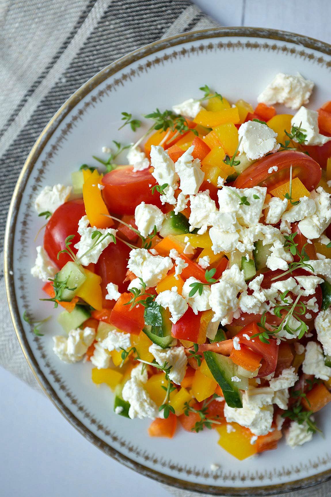

Feta salat with mustard-honey dressing

A simple salat with a fancy dressing makes a recipe everyone will ask for!
Ingredients
For the salat
- Romaine lettuce
- Red or yellow bell peppers
- Small or normal tomatoes
- Feta cheese
- A mix of seeds (e.g. Sunflower-, pumpkin-, sesameseeds)
For the dressing:
- 1 Tablespoon of mustard
- 1 Tablespoon of honey
- Balsamic vinegar
- Olive oil
Steps:
Preparing the dressing:
- Mix the mustard and honey with a splash of balsamic vinegar so that it has a smooth texture.
- Add a little bit of olive oil.
Preparing the salat:
- Cut all the ingredients but the seeds in small pieces
- Mix them together in a bowl.
- Roast the seeds in a frying pan for a short time. Just so that they have a nice brown color.
- Lastly add the seeds and the dressing and your salat is ready!
Return to main page